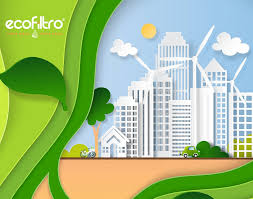

PAPEL DE LAS EMPRESAS EN LA PROTECCIÓN DEL MEDIO AMBIENTE
El papel de las empresas en la protección del medio ambiente es fundamental para abordar los desafíos ambientales globales y promover la sostenibilidad a largo plazo. Aquí hay algunas formas en que las empresas pueden contribuir a la protección del medio ambiente:
- Adopción de prácticas sostenibles: Las empresas pueden implementar prácticas de gestión ambiental sostenibles en todas sus operaciones, incluyendo la reducción del consumo de recursos naturales, la minimización de residuos y la adopción de tecnologías limpias.
- Eficiencia energética: Las empresas pueden mejorar la eficiencia energética en sus instalaciones y procesos, lo que no solo reduce su huella ambiental, sino que también puede generar ahorros significativos en costos operativos.
- Uso de energías renovables: La adopción de fuentes de energía renovable para alimentar las operaciones empresariales puede reducir las emisiones de gases de efecto invernadero y disminuir la dependencia de los combustibles fósiles.
- Gestión responsable de residuos: Las empresas pueden implementar programas de gestión de residuos que incluyan la reducción, reutilización y reciclaje de materiales, así como la disposición adecuada de residuos peligrosos.
- Innovación y desarrollo de productos sostenibles: Las empresas pueden invertir en investigación y desarrollo de productos y servicios que sean más respetuosos con el medio ambiente a lo largo de su ciclo de vida, desde la fabricación hasta el uso y la disposición final.
- Transparencia y divulgación de información ambiental: Las empresas pueden ser transparentes sobre su desempeńo ambiental al informar públicamente sobre sus acciones y resultados en materia de sostenibilidad, lo que fomenta la rendición de cuentas y la confianza de los stakeholders.
- Colaboración con partes interesadas: Las empresas pueden colaborar con gobiernos, organizaciones no gubernamentales, comunidades locales y otros actores para abordar los desafíos ambientales de manera colectiva y encontrar soluciones sostenibles.
En resumen, las empresas tienen la responsabilidad y la oportunidad de desempeńar un papel activo en la protección del medio ambiente mediante la implementación de prácticas comerciales sostenibles y la promoción de la innovación y la colaboración en toda la cadena de valor.
